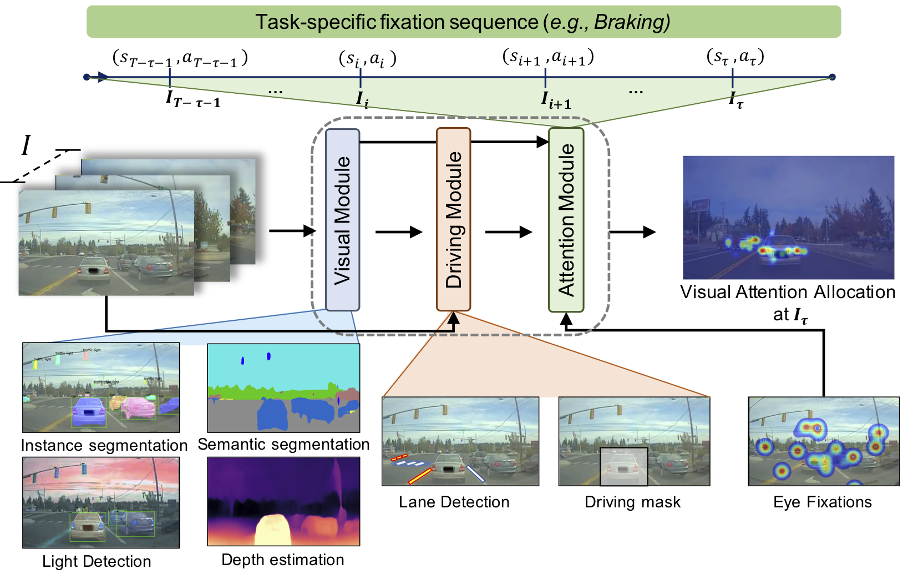
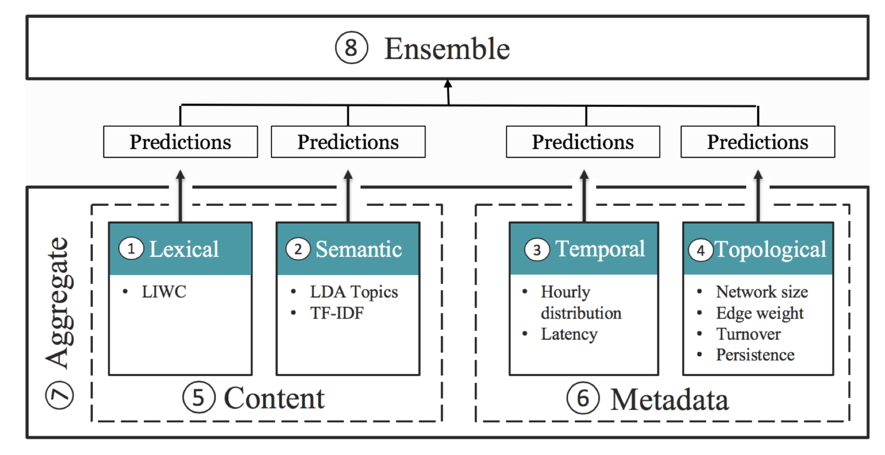
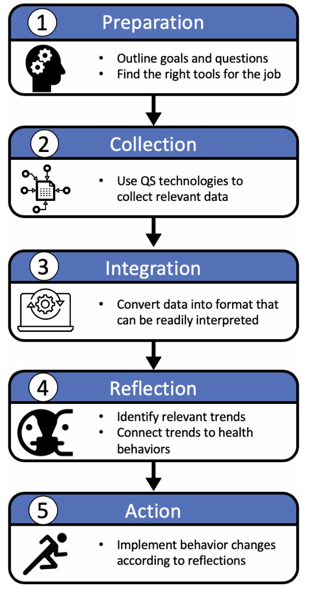
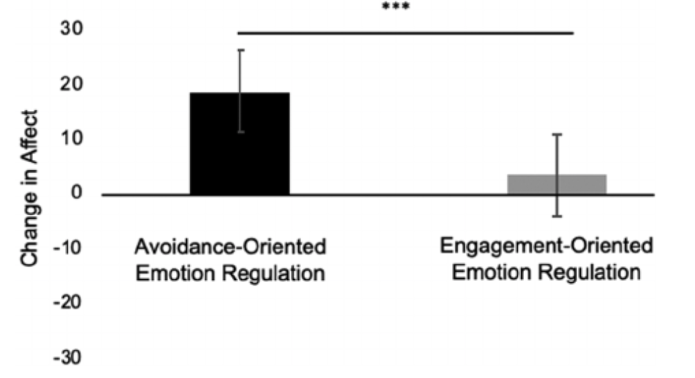

Sonia Baee
My work is understanding macro and micro-level human behaviors manifest in the wild. I use behavioral intervention approaches to substantially increase the likelihood of success of maintaining a healthier lifestyle also providing actionable analysis and practical help for daily activity routine. My primary research interests lie at the intersection of human behavior, mobile sensing, human-AI interaction, and machine learning. I use multidisciplinary approaches related to behavioral intervention to provide preventive and remote treatment by utilizing health services and information delivered or enhanced through the internet health (eHealth) or mobile health (mHealth) such as body sensor networks and machine learning models. Therefore, these approaches enable preventive treatment, personalized recommendations, and significantly reduce cost. My focus is to apply behavioral intervention approaches not only to different well-being concerns such as anxiety, loneliness, depression, and Human Immunodeficiency Virus (HIV) but also to some of the important activities like driving.
I am a fourth-year PhD student in the Department of System and Information Engineering at the University of Virginia where I am part of the Sensing Systems for Health lab and advised by Dr. Laura Barnes. I received my master's and bachelor's in Computer Science at the Amirkabir University of Technology (Tehran Polytechnic) in 2013 advised by Prof. S. Mehdi Hashemi. Here is a link to my CV-[December 2020].
Current Projects
| Behavioral Intervention - MindTrails (Summer 2017 - Present) The program you’re completing is a type of intervention called cognitive bias modification (CBM), and it is designed to help you change how you think in response to situations that make you feel anxious or upset. [project page] |
|
| Behavioral Intervention - Attrition (Summer 2019 - Present) Predicting an early stage of dropout in digital mental health. mHealth is a promising paradigm for the management of one's physical and mental health. The pervasiveness of smartphones has made it possible to deliver in-the-moment treatment for conditions such as anxiety and depression through internet-delivered mHealth interventions. Despite these advances, mHealth continues to suffer from low engagement and high attrition rates. In this work, we examine attrition in the MindTrails program, an online intervention for social anxiety. |
|
| Behavioral Intervention - Social Support for HIV patients (Summer 2020 - Present) Understanding different types of social supports in a network of communication from PositiveLinks (PL). PL is a clinic-centered engagement in care program that employs a tailored smartphone app with a private digital social support community to help people living with a chronic condition reach their care goals. [project page] |
Preprints
|  | MEDIRL: Predicting the Visual Attention of Drivers via Maximum Entropy Deep Inverse Reinforcement Learning. Sonia Baee, Erfan Pakdamanian, Inki Kim, Lu Feng, Vicente Ordonez Roman, Laura Barnes 2018 IEEE EMBS International Conference on Biomedical & Health Informatics (BHI). [project page] [arxiv] [bibtex] |
Publications
|  | A Generalized Framework for Understanding the Relationship between Social Media Discourse and Mental Health. Sanjana Mendu, Anna Baglione, Sonia Baee, Congyu Wu, Brandon Ng, Adi Shaked, Gerald Clore, Mehdi Boukhechba, Laura Barnes Proceedings of the ACM on Human-Computer Interaction 4.CSCW2 (2020). [paper] [bibtex] |
| A Framework for Addressing the Risks and Opportunities In AI-Supported Virtual Health Coaches. Sonia Baee, Mark Rucker, Anna Baglione, Ameko Mawulolo K., Laura Barnes 14th EAI International Conference on Pervasive Computing Technologies for Healthcare (EAI PervasiveHealth 2020). [paper] [bibtex] |
|
|  | Redesigning the Quantified Self Ecosystem with Mental Health in Mind. Sanjana Mendu, Sonia Baee, Anna Baglione, Laura Barnes. 2020 Computer Human Interaction (CHI) Workshop on Technology Ecosystems: Rethinking Resources for Mental Health. [paper] |
|  | Do I really feel better? Effectiveness of emotion regulation strategies depends on the measure and social anxiety. Katharine E Daniel, Sonia Baee, Mehdi Boukhechba, Laura E Barnes, Bethany A Teachman 2019 Depression and Anxiety 36.12: 1182-1190. [paper] [bibtex] |
| SocialText: A framework for understanding the relationship between digital communication patterns and mental health. Sanjana Mendu, Mehdi Boukhechba, Anna Baglione, Sonia Baee, Congyu Wu, Laura Barnes 2019 IEEE 13th International Conference on Semantic Computing (ICSC). [paper] [bibtex] |
|
| A social cognitive theory-based framework for monitoring medication adherence applied to endocrine therapy in breast cancer survivors. Sonia Baee, Mehdi Boukhechba, Alicia L. Nobles, Jiaqi Gong, Kristen Wells, Laura E. Barnes. 2018 IEEE EMBS International Conference on Biomedical & Health Informatics (BHI). [paper] [bibtex] |
|
| Passenger boarding/alighting management in urban rail transportation. Sonia Baee, Farshad Eshghi, Seyed Mehdi Hashemi, Rayehe Moienfar. 2012 ASME/IEEE Joint Rail Conference 44656, 823-829. [paper] [bibtex] |